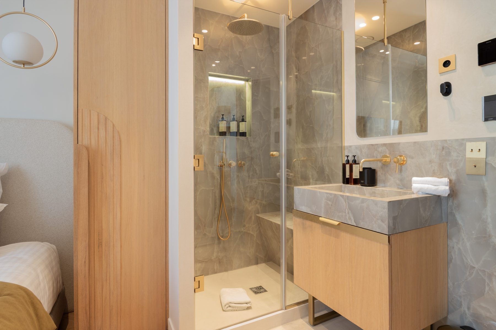
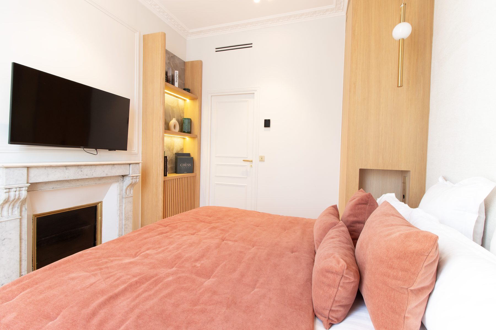
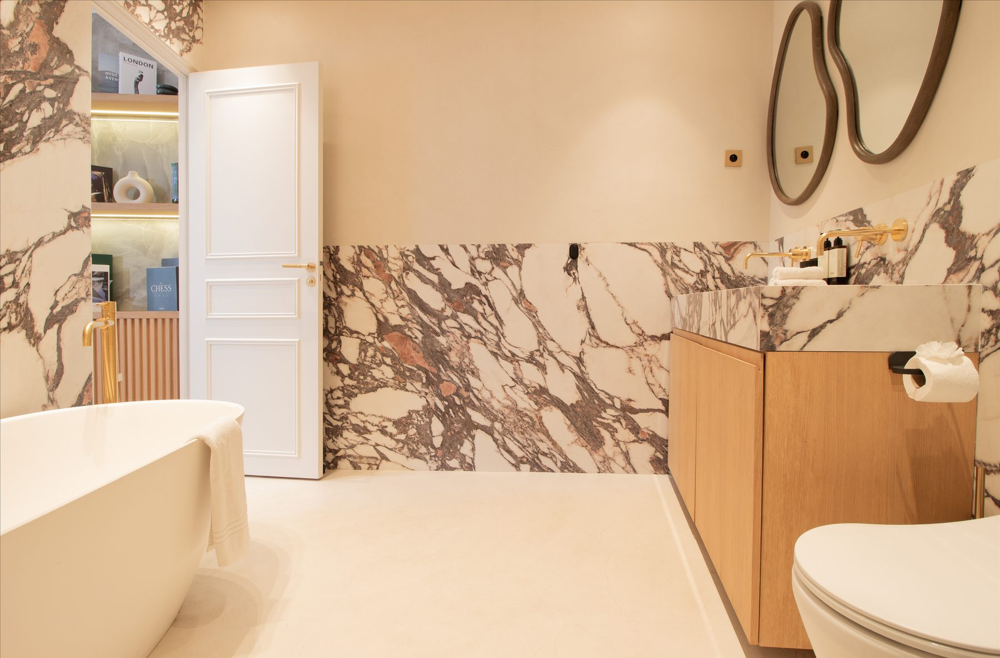
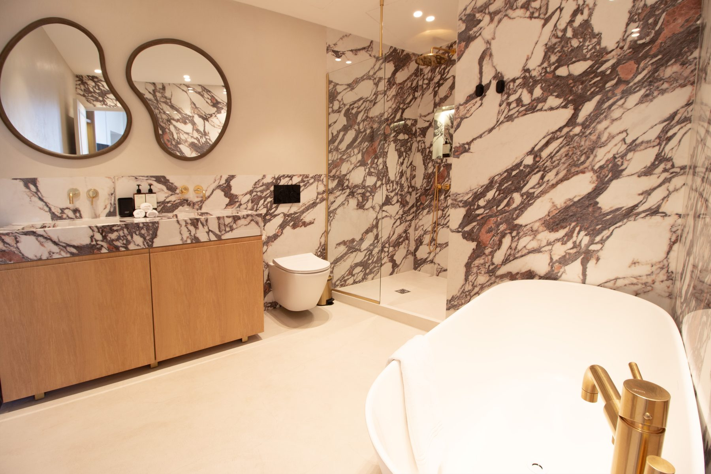
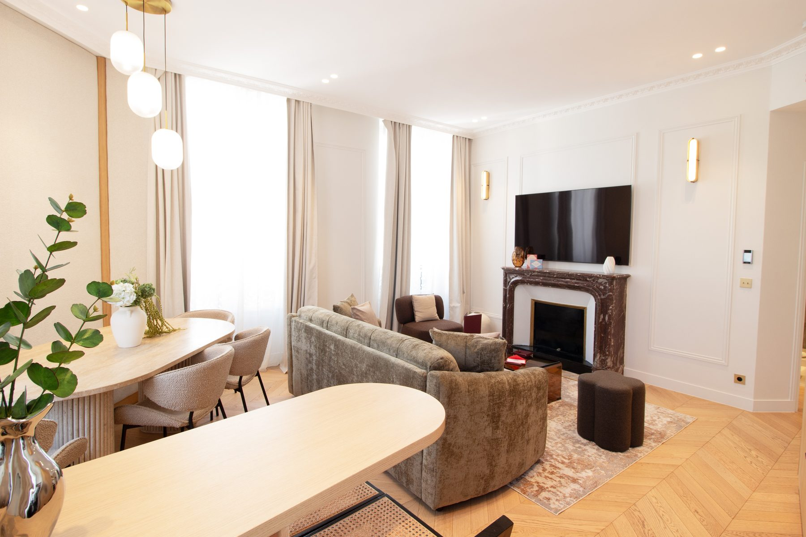
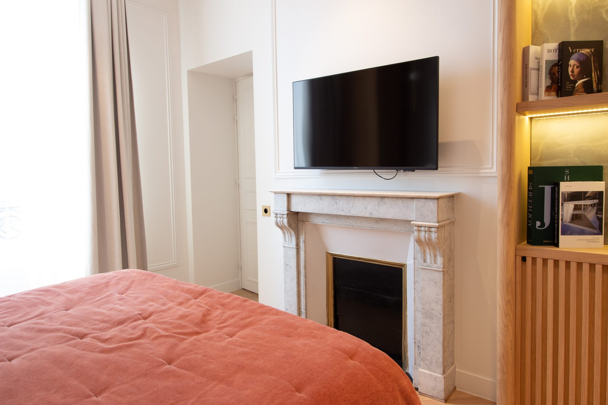

Paris 8e
Un appartement qui portait en lui sa propre solution. Marbre gris, chêne clair, laiton brossé — la matière révélée plutôt qu'ajoutée.






Rue de l'Arcade, dans le 8e arrondissement de Paris, cet appartement de 130 m² a révélé sa propre logique. John Rozenblum, designer d'intérieur, a choisi de ne rien forcer : le marbre gris des sols, le chêne clair des menuiseries, le laiton brossé des poignées — chaque matériau était déjà là, en attente d'être rendu lisible. La rénovation complète a privilégié la fluidité des circulations et la cohérence des volumes, transformant un appartement haussmannien classique en un intérieur contemporain raffiné. Un projet de design intérieur parisien où la contrainte devient ressource, et où le résultat paraît inévitable.
La rue de l'Arcade traverse le 8e arrondissement de la place de la Madeleine à la gare Saint-Lazare — un quartier d'immeubles de rapport du Second Empire, où les appartements ont gardé leurs hauteurs sous plafond, leurs moulures et leurs cheminées. La lumière y entre par des fenêtres hautes et étroites, et la rénovation consiste moins à ajouter qu'à remettre de l'ordre. Sur 130 m², le programme tenait en une phrase : rendre l'appartement à sa géométrie.
Trois matériaux structurent le projet : le marbre, le chêne et le laiton. Ils ne sont pas là pour décorer mais pour créer une continuité — le regard passe d'une pièce à l'autre sans rupture. Le chêne clair court dans les menuiseries, les têtes de lit et les bibliothèques ; le laiton brossé revient sur les poignées, les appliques et la robinetterie ; le marbre occupe les pièces d'eau. Rien n'a été plaqué sur l'existant : les cheminées d'origine ont été conservées, les moulures dégagées, le parquet restauré.
La salle d'eau est traitée dans un marbre gris uni : douche à l'italienne entièrement vitrée, meuble vasque en chêne suspendu, robinetterie dorée. Tout y est calme, sans contraste. La salle de bains principale prend le parti inverse — un marbre blanc veiné de mauve habille les murs et le sol, une baignoire îlot occupe le centre, deux miroirs aux contours organiques répondent à la veine de la pierre. Le même meuble en chêne fait le lien entre les deux pièces.
Dans les chambres, la cheminée d'époque a été gardée telle quelle et sert de point d'appui : le mobilier sur mesure s'organise autour, sans chercher à la faire disparaître. Des niches en chêne rétroéclairées remplacent les rangements fermés, un couvre-lit terracotta réchauffe l'ensemble. Le séjour reste volontairement dépouillé — parquet ancien, cheminée de marbre, rideaux clairs, un canapé et une table de repas. L'espace respire parce qu'on y a mis moins, pas plus.
Arcade appartient à une série de rénovations conduites dans le 8e arrondissement de Paris, aux côtés de Marbeuf et de Madeleine.
Ce projet fait partie des réalisations de design d'intérieur à Paris de John Rozenblum. Pour discuter d'un projet similaire ou d'une rénovation sur mesure, prenez contact.
Un projet ?
Chaque projet commence par une conversation. Partagez votre vision — je m'occupe du reste.
Prendre contact